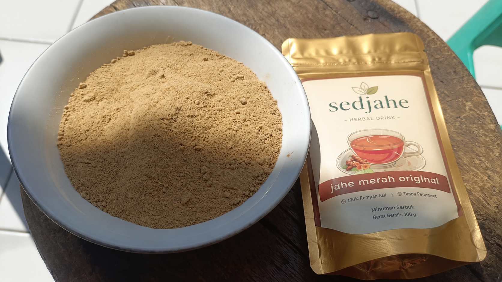

Sering Ngerasa "Jompo" Sebelum Waktunya?
Ini Penyelamat Lo.
Jujur aja, ada fase di mana cuaca lagi gila-gilanya, kerjaan numpuk, deadline mepet, dan tiba-tiba hidung mulai mampet. Tenggorokan gatel. Badan rasanya remuk. Pas lagi ngekos atau jauh dari orang tua, sakit itu adalah mimpi buruk paling nyebelin. Bener kan?
Dulu pas masih kecil, kalau kita mulai bersin-bersin, ibu pasti langsung bikinin minuman hangat yang baunya khas. Rasanya lega, perut nyaman, dan besoknya langsung bisa main lagi. Sekarang pas udah gede, lo ngerasa gak punya waktu buat sekadar merawat diri sendiri. Minumnya es kopi terus, padahal badan udah ngasih warning minta istirahat.
*Wake up, guys.* Lo butuh selimut dari dalam. Lo butuh jahe merah.
Bukan sembarang jahe, jahe merah (Zingiber officinale var. rubrum) punya senyawa pedas bernama gingerol yang dosisnya jauh lebih barbar dari jahe biasa. Ibarat *cheat code*, ini 7 hal yang bakal terjadi di badan lo kalau lo rutin minum jahe merah:
1. Imun Kebal (Anti Tumbang-Tumbang Club) 🛡️
Cuaca pagi panas terik, sore tiba-tiba hujan badai. Antioksidan jahe merah bertindak kayak *shield* tak kasat mata di dalem sel darah lo. Saat temen-temen kantor/kampus lo mulai pada flu berguguran satu-satu, lo tetep on fire.
2. Hilangin Pegal Linu Seketika ⚡
Duduk di depan laptop 8 jam sehari bikin leher kaku dan punggung kerasa mau patah? Jahe merah punya zat anti-inflamasi (anti-radang) yang kerja persis kayak koyo, tapi ini dari dalem. Rasa hangatnya langsung ngelemesin otot yang tegang.
"Sakit di perantauan itu mahal dan sepi. Jangan nunggu sakit baru cari obat. Jaga badan lo selagi masih bisa berdiri tegak."
3. Ngusir Angin Jahat (Bye Perut Begah) 🌪️
Sering telat makan, kena AC ruangan terlalu dingin, atau masuk angin sehabis naik motor malam-malam? Seduhan jahe merah langsung melebarkan pembuluh darah. Perut yang tadinya begah dan mual bakal langsung plong. *Instant comfort.*
4. Ngebersihin Paru & Tenggorokan 🗣️
Kalau lo sering nongkrong di tempat banyak asap rokok atau debu jalanan, tenggorokan pasti kerasa ganjel. Rasa pedas hangat dari jahe merah ini ngebantu mencairkan dahak dan ngebunuh bakteri radang tenggorokan. Suara balik jernih lagi.
5. Body Detox 🧼
Sadar gak kalau makanan yang kita konsumsi sekarang penuh sama micin, pengawet, dan junk food? Jahe merah bantu kerja ginjal dan liver lo buat ngebuang racun (detox) lewat keringat. Badan lo berasa jauh lebih enteng besok paginya.
6. Jaga Gula Darah Tetap Santai 📉
Sering minum boba bikin insulin lo kewalahan. Kabar baiknya, senyawa dalam jahe merah bantu balikin sensitivitas insulin lo. (Apalagi kalau lo minum jahe merah yang gulanya pakai gula aren asli, makin aman dari ancaman diabetes usia muda!).
7. Cheat Code Nyeri Haid (Buat Ciwi-Ciwi) 🌸
Gak perlu lagi nangis guling-guling dan nahan *mood swing* parah pas lagi dapet (PMS). Sifat relaksan jahe merah bener-bener ampuh nenangin otot rahim yang lagi kram. Minum pas anget-anget, rasanya kayak dipeluk dari dalem.

Sayangi Badan Lo.
Lo kerja keras buat ngebahagiain diri sendiri dan keluarga, jangan sampai uangnya habis dipake berobat.
Gak perlu repot numbuk jahe ke pasar. Kita nyediain Sedjahe Jahe Merah Original. 100% rimpang murni plus manisnya Gula Aren asli. Tinggal seduh air panas di kosan/kantor, aduk, dan biarkan kehangatannya ngejaga lo hari ini.